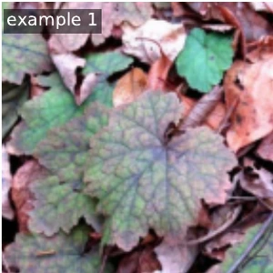
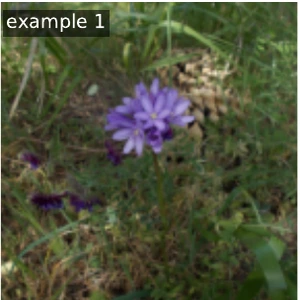
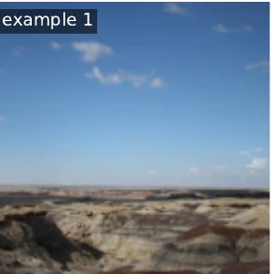
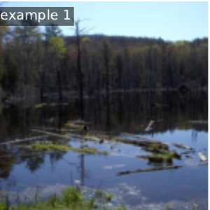
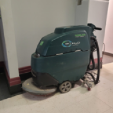
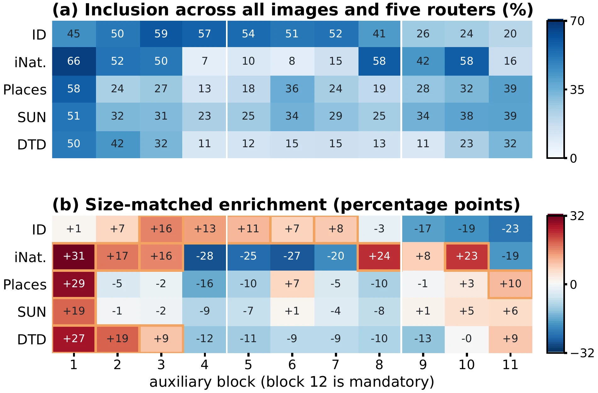

Final layer only
One terminal score
Read the final layer’s score directly. Intermediate layer scores do not enter the output.
Layer 12.
Learning to select layers for reliable out-of-distribution detection.
Voyager learns which frozen CLIP layers to trust for each image, instead of using one fixed fusion rule.
1 Adelaide University · 2 Australian National University
3 Crossing Lab
Router 1 of 5 selects layers 1, 2, 7, 8, 12.
Ensemble decision: OOD-like
Reference: OOD
Recorded with frozen CLIP ViT-B/16. All layers run; highlighted scores form one expert. The ensemble averages five expert scores. Inspect the full evidence ↗
18.86%Average FPR@95 ↓ lower is better
94.49%Average AUROC ↑ higher is better
8.8 pointslower average FPR@95
than four-shot Local-Prompt (ID-derived context)
ImageNet-1K
CLIP ViT-B/16 · 4-shot ID + WebContEX
The final representation is only part of the story.
Intermediate CLIP layers retain different visual cues. The useful combination changes with the input and the distribution shift, so averaging the same layers for every image can leave useful evidence untapped.
Voyager keeps the representations and confidence scores frozen. It learns a smaller decision: which sparse layer expert should supply this image’s score?
It builds on Mysteries of the Deep, moving from fixed intermediate-layer fusion to learned, input-conditioned selection.




Four OOD shifts from the study. Images are excerpts from the manuscript’s recorded routing examples.
Each expert averages a subset of layer scores. Every candidate includes the final layer as a semantic anchor; the router selects one expert per image.
Select a component, flame, snowflake or distribution to see what it does.
Pan the diagram horizontally, or choose a part below.
Part 1 of 9 · Inference
Penguin and puffin illustrate ID and OOD inputs in the figure. At inference, Voyager receives an image without an ID/OOD label. Its route is predicted from frozen visual features.
Input image → frozen CLIP features
The birds and flows are a schematic, not an inference result.
Inspect real model traces ↗Change the image. See which connections can change.
The penguin is the ID example in the manuscript illustration.
One terminal score
Read the final layer’s score directly. Intermediate layer scores do not enter the output.
Layer 12.
One shared recipe
Average the same chosen subset for every image. Here the five-layer subset stays fixed when you change the bird.
Layers 3, 4, 6, 8, 12.
An image-conditioned recipe
Mean-pooled frozen features enter the router. It chooses the expert whose selected layer scores are averaged.
Layers 3, 5, 6, 9, 12.
Penguin: final-layer scoring still reads layer 12, fixed fusion still combines 3, 4, 6, 8 and 12, and the illustrative Voyager route uses 3, 5, 6, 9 and 12.
Solid arrows carry features or scores. The dashed arrow is the router’s subset choice. One router is drawn; the deployed detector averages five.
These routes illustrate the three structures; they are not model predictions. Inspect recorded layer evidence ↗
Add weak OOD context to router training using the ID vocabulary.
The images are retrieved from Wikimedia Commons after semantic filtering. This expands the router’s training context; CLIP stays frozen and the context is used only during training.
Step 1 of 5
The ID label set defines which concepts belong to the task. WebContEX uses those names to establish a semantic exclusion set, without needing target-OOD examples.
Few-shot ID examples have domain label y = 0; retrieved context images later receive y = 1.
The deployed filter checks the full ID vocabulary, excludes ID synsets and their ancestors/descendants, and requires at least two WordNet hops. It also applies vocabulary depth, lexical-category and lemma-frequency rules. Semantic filtering does not guarantee image-level disjointness from every evaluation dataset.
Examples from Figure C.1, used for router supervision.

Balanced retrieval. Up to five query variants per synset; target 20 images per synset, with per-query and aspect-ratio caps.
Image quality. At least 256 × 256 pixels; valid decoding, orientation normalization and photographic-quality checks.
Within-shard duplicates. URL/page-ID checks, exact JPEG SHA-256 checks and an 8 × 8 perceptual hash with a Hamming-distance cutoff of 8.
Training-only cache. The deployed pool has 5,078 entries. Frozen features and layer scores supervise soft expert targets; query names are not classification targets, and context images are not required at inference.
CLIP image features, text prototypes, and layer-wise OOD scores stay unchanged. An expert is an unweighted mean over a final-layer-anchored subset.
A small MLP router learns from few-shot in-distribution examples and WebContEX: weak web-retrieved context constructed from the ID label set. Training uses no target-OOD images or labels. The deployed context comes from Wikimedia Commons; concepts are filtered to be at least two WordNet hops from the ID taxonomy. This semantic filter is not a guarantee of complete image-level disjointness; the manuscript details the construction and deduplication scope.
Each router chooses one expert. The deployed five-router ensemble averages their outputs while sharing one frozen CLIP forward pass. WebContEX is needed only during training. The manuscript reports 4.18 ms per image for the deployed model versus 4.08 ms for fixed 12-layer GL-MCM and 3.21 ms for MCM on its measured single-GPU setup; these are hardware-specific timings.
ImageNet-1K as the in-distribution dataset, CLIP ViT-B/16, and four OOD shifts. FPR@95 measures the OOD fraction accepted when ID recall is 95%.
| Method | iNaturalist | SUN | Places | DTD | Average |
|---|---|---|---|---|---|
| MCM zero-shot | 30.91 | 37.59 | 44.69 | 57.77 | 42.74 |
| GL-MCM zero-shot | 17.42 | 30.75 | 37.62 | 55.20 | 35.25 |
| MoD fixed fusion | 15.98 | 45.58 | 35.71 | 25.51 | 30.70 |
| CoOp | 14.60 | 28.48 | 36.49 | 43.13 | 30.67 |
| LoCoOp | 16.05 | 23.44 | 32.87 | 42.28 | 28.66 |
| ID-Like | 8.98 | 42.03 | 44.00 | 25.27 | 30.07 |
| Local-Prompt | 9.65 | 20.40 | 29.39 | 51.20 | 27.66 |
| Voyager | 3.93 | 21.65 | 21.88 | 27.96 | 18.86 |
Bold marks the lowest FPR@95 among methods with the selected shot count. Training-free references are shown for context. Baselines follow the manuscript’s reported comparisons; one-shot Local-Prompt is the authors’ rerun. Voyager additionally uses WebContEX, while Local-Prompt uses ID-derived local context. Voyager has the lowest average here; Local-Prompt is lower on SUN and ID-Like on DTD.
The gain comes from both the training context and the routing decision.
With the router recipe held fixed, replacing WebContEX with ID-derived context increases average FPR@95 from 18.86 to 26.71. With WebContEX and expert scores fixed, learned routing improves on the strongest score-based selector by 10.1 points.
These controls measure different contributions. The headline comparison is to a four-shot baseline; Voyager additionally uses weak web-retrieved context.
Explore the manuscript’s diagnostics. Layer use and routed examples help explain the mechanism; they do not certify that every OOD input is detected.

Voyager requires a few-shot ID set and a weak web-retrieved training context. Results vary across datasets and backbones; the lowest average does not mean the lowest FPR on every shift.
The wider study includes Pascal-VOC, ImageNet-100, near-OOD subsets, and additional backbones. See the manuscript for their protocols, full comparisons, training costs, and limitations.
Not All Layers Are Created Equal: Learning to Select Layers for Reliable Out-of-Distribution Detection
The manuscript, implementation, and the work that motivated input-conditioned layer selection.
Code: DynAMO repository · public release pending
Read Mysteries of the DeepCamera-ready manuscript, updated 2 November 2026. Voyager is implemented in DynAMO. The repository is currently private; a public code release is pending. MIT code licence · Contact.
@misc{delajara2027voyager,
title = {Not All Layers Are Created Equal:
Learning to Select Layers for Reliable
Out-of-Distribution Detection},
author = {De la Jara, Ignacio M. and
Rodriguez-Opazo, Cristian and
Ranasinghe, Damith},
year = {2027},
note = {WACV 2027, camera-ready manuscript},
url = {https://mezosky.github.io/voyager/}
}Camera-ready citation, updated 2 November 2026. Final proceedings metadata will be added when available.
The penguin stays in familiar territory. The puffin heads beyond it.
Penguin · ID. Puffin · OOD.
A playful illustration of the manuscript’s penguin/puffin example.